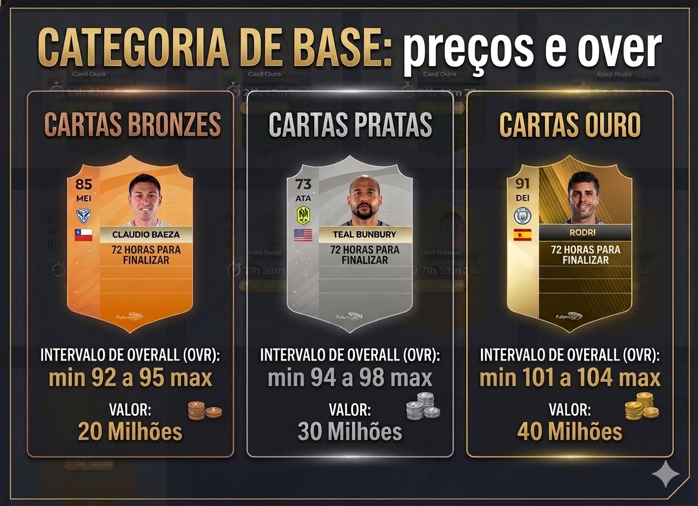
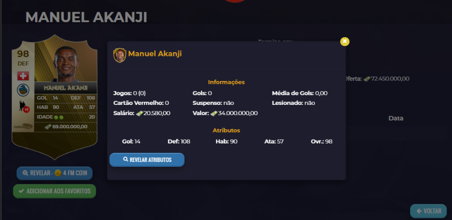

Neste tópico, serão apresentadas algumas estratégias para a identificação de jogadores, bem como a finalidade da funcionalidade “Revelar Atributos”, com foco no processo de formação e desenvolvimento de atletas. A partir dessas diretrizes, o manager poderá selecionar jogadores de acordo com suas necessidades específicas ou conforme o padrão previamente estabelecido, garantindo maior eficiência na evolução dos atletas e na construção estruturada do elenco.
🏟️Categoria de base
A categoria de base representa um dos principais mecanismos para a formação de novos jogadores, sendo fundamental para o desenvolvimento estratégico do elenco. Por meio desse recurso, é possível gerar atletas com custos mais acessíveis, evitando investimentos excessivos no mercado. Além disso, a categoria de base permite maior controle sobre o processo de formação, possibilitando ao manager estruturar o elenco de acordo com suas necessidades e objetivos, de forma eficiente.
Caso a categoria esteja no nível máximo de evolução, será possível selecionar a posição desejada. A partir dessa definição, será iniciada a formação de um jogador de 18 anos, com overall variando dentro dos limites estabelecidos para cada tipo de carta e evolução da sua categoria de base. O processo possui duração de 72 horas e custo variável, conforme a categoria da carta selecionada: bronze (20 milhões de euros), prata (30 milhões de euros) e ouro (40 milhões de euros).
Por outro lado, caso a categoria ainda não esteja totalmente evoluída, não será possível escolher a posição do jogador. Nessa condição, a formação ocorrerá de maneira aleatória e não haverá a opção de gerar três jogadores simultaneamente.
Após o período de 72 horas, será necessário clicar no botão verde “Finalizar”. Em seguida, os jogadores formados serão automaticamente enviados para o elenco.

🔍✨ Revelar jogador
Conforme mencionado anteriormente, o overall (OVR) de um jogador é definido a partir de seus três atributos principais. Em cartas recém-formadas ou disponíveis no mercado, essas informações são inicialmente classificadas como “privadas”, não estando visíveis ao manager.
Dessa forma, torna-se necessário o uso de 4 créditos para “Revelar Atributos”, permitindo a visualização completa dos atributos e do overall real da carta. Esse procedimento é fundamental para uma avaliação precisa do atleta antes de qualquer tomada de decisão estratégica.
Conforme ilustrado, o sistema inicialmente apresenta um OVR estimado e variável, que não necessariamente reflete o potencial máximo da carta. Para identificar esse limite, o manager deve acessar o jogador e utilizar a opção de revelação de atributos. Após a execução dessa ação, é possível visualizar o desempenho real e o teto de evolução do atleta.
Como exemplo prático, foi analisado um jogador ouro recém-formado com overall inicial de 89. Após a utilização da revelação, constatou-se que o atleta possuía alto potencial, atingindo um overall de 103, próximo ao limite máximo da categoria de base, que é 104. Esse processo evidencia a importância da ferramenta para uma avaliação precisa da qualidade dos jogadores gerados.
A funcionalidade “Revelar Atributos” também é aplicável no leilão de jogadores, sendo essencial para aumentar a assertividade nas decisões de compra e no planejamento de evolução das cartas. Por meio dela, o manager consegue analisar com maior precisão o potencial real do atleta, permitindo tanto aquisições mais estratégicas quanto o cálculo adequado da quantidade de treinos necessários para que a carta atinja seu desempenho máximo.
Como exemplo prático, considerando que a categoria de base permite a criação de apenas 3 jogadores a cada 72 horas, torna-se necessário recorrer ao mercado de jogadores para acelerar a formação do elenco.
Dessa forma, torna-se necessário o uso de 4 créditos para “Revelar Atributos”, permitindo a visualização completa dos atributos e do overall real da carta. Esse procedimento é fundamental para uma avaliação precisa do atleta antes de qualquer tomada de decisão estratégica.
Conforme ilustrado, o sistema inicialmente apresenta um OVR estimado e variável, que não necessariamente reflete o potencial máximo da carta. Para identificar esse limite, o manager deve acessar o jogador e utilizar a opção de revelação de atributos. Após a execução dessa ação, é possível visualizar o desempenho real e o teto de evolução do atleta.
Como exemplo prático, foi analisado um jogador ouro recém-formado com overall inicial de 89. Após a utilização da revelação, constatou-se que o atleta possuía alto potencial, atingindo um overall de 103, próximo ao limite máximo da categoria de base, que é 104. Esse processo evidencia a importância da ferramenta para uma avaliação precisa da qualidade dos jogadores gerados.
A funcionalidade “Revelar Atributos” também é aplicável no leilão de jogadores, sendo essencial para aumentar a assertividade nas decisões de compra e no planejamento de evolução das cartas. Por meio dela, o manager consegue analisar com maior precisão o potencial real do atleta, permitindo tanto aquisições mais estratégicas quanto o cálculo adequado da quantidade de treinos necessários para que a carta atinja seu desempenho máximo.
Como exemplo prático, considerando que a categoria de base permite a criação de apenas 3 jogadores a cada 72 horas, torna-se necessário recorrer ao mercado de jogadores para acelerar a formação do elenco.
⚽Mercado da bola → leilão de jogadores 💰
O processo de busca será realizado por meio da aplicação de filtros específicos, de acordo com a necessidade do manager.Neste caso, a configuração utilizada será a seguinte:
- Grupo: Ouro
- Idade máxima: 20 anos
Após a definição, vá em “Procurar”, iniciando assim a varredura de atletas disponíveis que atendam aos critérios estabelecidos.
Após a identificação de um jogador de interesse, o manager poderá utilizar a funcionalidade “Revelar Atributos” para obter o valor real do seu overall, bem como a distribuição completa de seus atributos.
Essa etapa exige o investimento de 4 créditos, sendo essencial para validar o potencial real da carta analisada.
Exemplo prático:
Durante a observação inicial, foi identificado um zagueiro com overall estimado de 98. Ao analisar seus três atributos principais — Defesa: 108, Habilidade: 90 e Ataque: 57 — o jogador demonstrava desempenho acima do esperado, sugerindo possível variação no seu valor real.
Diante disso, foi utilizada a opção “Revelar Atributos”, com o custo de 4 créditos.
JOGADOR NÃO REVELADO
JOGADOR REVELADO

Após a confirmação, descobriu-se que o atleta se tratava, na realidade, de uma carta ouro com overall 104, apresentando os seguintes atributos reais:
- Defesa: 112
- Habilidade: 98
-
Ataque: 71
Ao atingir seu nível máximo de desenvolvimento, o atleta apresentará os seguintes atributos finais:
- Defesa: 120
- Habilidade: 99
-
Ataque: 73
Esse resultado foi projetado após a aplicação de 11 treinos, evidenciando o potencial de crescimento da carta e a importância da análise prévia para um planejamento eficiente de evolução.
⚠️É importante destacar que o uso da função “Revelar Atributos” deve ser feito com cautela. Caso não seja utilizada de forma estratégica, pode resultar em um alto consumo de moedas, comprometendo os recursos disponíveis. Portanto, recomenda-se que o manager realize uma análise prévia cuidadosa antes de ativar a função, garantindo que o investimento de créditos seja realmente necessário e vantajoso para a tomada de decisão.
⚽Mercado da bola → Comprar jogadores 💰
Nesta aba, também são disponibilizados jogadores para compra sem a necessidade de disputa com outros managers, o que torna o processo mais direto e ágil.
Entretanto, devido a essa facilidade, é comum que as cartas apresentem valores acima da média de mercado. Por esse motivo, é fundamental que o manager realize uma avaliação criteriosa antes da aquisição, garantindo que o investimento esteja alinhado ao custo-benefício esperado.
Ainda assim, a funcionalidade cumpre bem o seu propósito, sendo uma alternativa eficiente para reforçar o elenco de forma imediata, especialmente em cenários que exigem rapidez
- SUJEITO A ALTERAÇÕES #SAF